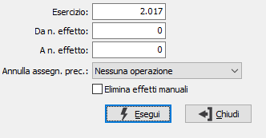

Annullamento generazione effetti
Il programma effettua l'annullamento degli effetti specificati nei limiti, se non sono stati stampati sulla distinta.

ANNO: indicare l'anno relativo agli effetti da annullare.
DA N. EFFETTO: indicare il numero dell'effetto con cui iniziare l'annullamento.
DA N. EFFETTO: indicare il numero dell'effetto con cui terminare l'annullamento.
ANNULLA ASSEGNAZIONI PRECEDENTI: Definisce se, per gli effetti selezionati, devono essere annullate eventuali assegnazioni fatte precedentemente. Sono previste tre ipotesi:
Nessuna assegnazione: non viene eseguita nessuna operazione di inizializzazione del conto di presentazione
Elimina assegnazione: al conto di presentazione viene assegnato il valore vuoto
Assegnazione originale: al conto di presentazione viene assegnato il conto di presentazione prelevato dal cliente (come in fase di generazione effetti)
ELIMINA EFFETTI MANUALI: Se spuntato elimina, oltre agli effetti generati, anche gli effetti inseriti manualmente dal programma di manutenzione distinta.